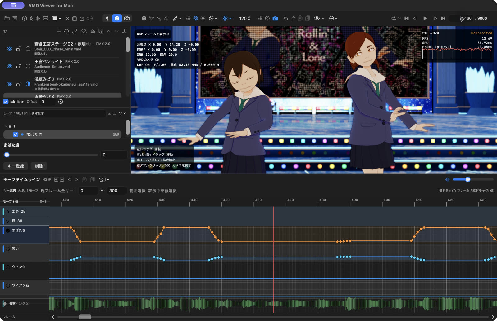
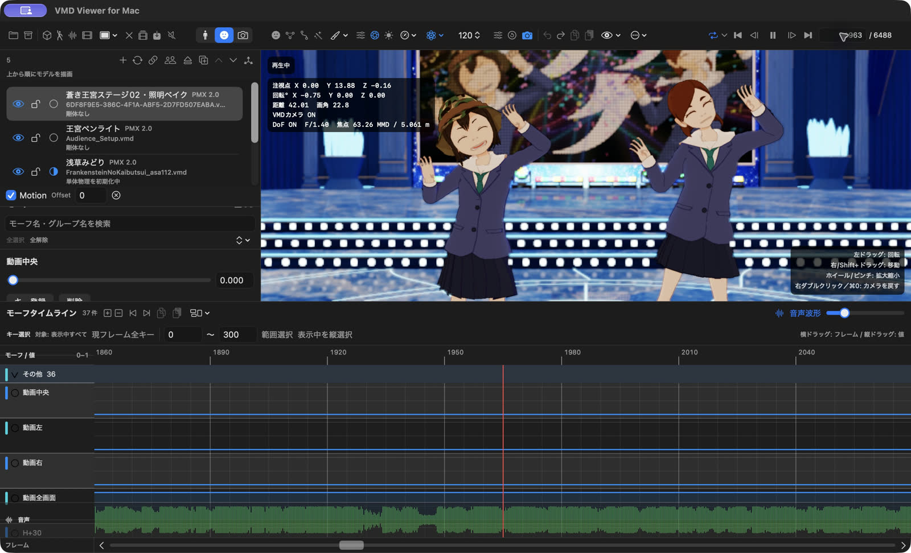

「あのモーフを使えばよかった！」
たとえば ダンスの途中でふっと笑うカット 止めて見ると悪くないのに 通して見ると笑顔が少し早い 直したいのはほんの数コマ でも出先で手元にはMacしかない そんなときにその場で手を入れられるようにしたいというのが VMD Viewer for Mac（VvfM）の出発点のひとつでした
第6回では フレームを送ったときや視点を動かしたときの手応えを取り上げました 今回は画面の下にあるタイムラインです モデルが踊っている間に 今の動きが時間軸のどこにあるかをどう見せるか そこから数コマ戻って直す操作を どうつなげるか 開発中は 赤い線が落ち着かないという違和感が 大きな見直しのきっかけになりました
波形を見ながら 動きの位置を探す
操作を考えるうえで意識したのは DTMソフトで曲を編集するときの感覚です 音を聴きながら波形を目で追い 気になるところで止めて 少し戻す 同じ数秒を繰り返せると 音に対して動きが早いのか遅いのかを考えやすくなります
v0.3.0のモーフタイムラインには フレームの目盛りとモーフ名を見失わない表示や WAV波形との位置合わせ 再生に合わせた横スクロールが入りました 菱形はキーがある時刻を示し グラフの高さはモーフの値を表します 波形の山が目印になれば 同じ軸の上で「この音のすぐあとに表情を出したい」と考えられます 縮小して全体を眺めることも いま見ているコマを基準に拡大して隣のキーを探すこともできます
DTMソフトから取り入れたかったのは 音と動きを同じ時間軸に置いて 再生した流れのまま編集する場所を見つけられることでした


赤線を追う代わりに 赤線の下で時間を送る
開発中の要望には VMD再生中にボーン・モーフ・カメラの赤線が振動するように見えるので一定の位置に固定したい というものがありました 当時の方式では 線が表示範囲の端へ近づいてから画面が追いかけていたため 線と目盛りの両方に目を配る必要がありました
そこで 再生中はグラフの中央を目印にして その下を目盛り・キー・波形が流れる方式へ 見たい時刻がいつも同じ場所に来るので 目線を大きく横へ振らずにビューポートと見比べられます 開発チャットでフレーム表示とWAV波形の赤線をそろえるよう依頼し v0.47.0で波形側の別タイマーと別の赤線をなくしていましたが 中央固定ではさらに 赤線とスクロールの位置を同じ再生時刻から求めました
試作では 手で操作したあとに少し待ってから自動追従へ戻す案も試しました 次のビルドでは 再生中にカメラやタイムラインを触っていても追従を続け 停止中に手で動かした位置はそのままにしました 流れを見ている間は自動で送り 止めて探す間は勝手に動かさない 再生と編集で 手に委ねる範囲を分けたところが転機でした


更新を増やす前に スクロールで何が動くかを調べた
中央で追えるようになっても ときどき表示が詰まると流れは途切れます v0.56.5では ディスプレイの更新に合わせて赤線とスクロールを動かす候補を試しました 編集画面の再評価は減ったものの 更新の間隔が長くなる側ではむしろ悪化 v0.56.7の追加試験でも タイムライン上の位置のずれが小さくなる一方で 長い更新待ちが残りました 位置が合うだけでは滑らかになったとは言えないため この方式は既定にしませんでした
このあと開発チャットでは 「再生スクロールを滑らかにする」ことと 「現在フレームを中心に拡大できるようにする」ことを別々に挙げています v0.56.49では後者を採用しました 音に合わせたいコマを見つけたら そこを基準に拡大して前後のキーを探せます 一方 スクロールの試験では長い更新待ちにばらつきが残り この版では従来の表示方式を維持しました
その後のCodexとのやり取りでは build 627の50秒再生で残った 32 ms以上の表示間隔14回と 自動スクロール中の再生ヘッド更新との関係を調べました 横に送っているだけなのに 横位置の変更がモーフ編集画面全体に伝わり 同じ一覧を表示するための処理まで繰り返していたからです
v0.58.22では 横位置の通知先をスクロールバー側に絞りました 横位置は引き続き動きますが 編集画面本体はその通知だけでは組み立て直しません 詳細ログを取った比較の1組では モーフ編集画面本体を再評価した回数が1,254回から0回に 同じM2 Max・同じ作品を50秒ずつ再生した通常条件の3組でも 32 ms以上空いたビューポートの表示間隔は22→12回・9→8回・19→18回と減りました 回数の減り方は試行ごとに違いましたが 横スクロールに不要な処理を切り離せたことは確認できました
検証では性能とは別に 操作のつながりも見ました たとえば フレームバーをドラッグ後に同じ位置でマウスボタンを離し すぐ拡大すると 縮尺が変わったためにもう一度シークして時間軸が逆戻りすることがありました 最後に置いたポインターが同じ位置なら 移動済みの操作を重ねて送らないようにしました ドラッグ直後のズームや短いループなど 作品を直すときの操作を続けて行っても 見ていた場所を失わないことを確かめたのも この版のポイントです
笑顔の強さと 出るタイミングを分けて直す
冒頭の笑顔に戻ります 再生を止め モーフモードで触りたい行を表示します 笑顔が強く見えたコマに ちょうどキーがあるとは限りません 前後のキーの間で表情が変わっている途中かもしれないので 顔を見ながら数コマ戻し 菱形にポインターを重ねて登録値を読みます
笑顔が強すぎるなら キーのフレームで値を少し下げて試します 画面で試した値をキーに残すには「キー更新」で確定します 同じカットの表情を見比べたいなら カメラもフレームもそのままです
一方 表情はそのままで笑い始めが早いなら 値を戻して 菱形を右へ少し移します グラフは 横がフレーム 縦がモーフの値です 斜めに動かせば値も変わり得るので 移動後に登録値を確認します そのあと短くリピートして 顔が上がる動きと笑顔がどこで重なるかを見ます
波形を目印に探す 止めてひとつ直す 少し戻して同じ音からもう一度見る タイムラインを滑らかに送りたかったのは この行き来を途中で途切れさせたくなかったからです
用語解説
- DTMソフト（DAW）
- 録音や音楽編集のためのソフト ここでは音声波形と再生位置を同じ時間軸で見ながら編集する操作を指す
- ビューポート
- モデルやステージを表示する作業画面
注記
- 笑顔は操作を説明するための例で 特定の公開作品で実際に行った修正ではありません モーフキーのドラッグ操作はv0.58.25以降を前提としています 比較では移動先に同じモーフのキーがないフレームを使います
- 中央固定と追従の試作は開発ビルド229／230の記録に基づきます 229は未公開の検証ビルドです 表示更新の上限はタイムラインの描画側の話で v0.56.2以降の当時の変更ではVMD・音声・物理・書き出しの時計とは分けています
- 再評価回数はモーフ編集画面本体の表示内容を組み立て直す処理の計数で 総描画回数ではありません 表示間隔は一作品のビューポート実測であり 横スクロールの更新頻度や全環境での滑らかさを測ったものではありません
- 操作の詳細：VvfM ガイド「タイムラインの基本」 ／ モーフタイムラインの見方
- 掲載画像は別ビルドの静止画です 連続した2コマの比較やスクロール速度の実測ではありません
- 画像の素材：浅草みどり・水崎ツバメモデル くれよん ／ ステージ・観客 しおむすび ／ 楽曲・ダンスモーション HIMEHINA『フランケンシュタインの怪物』 その他の素材は作例動画のクレジットをご覧ください